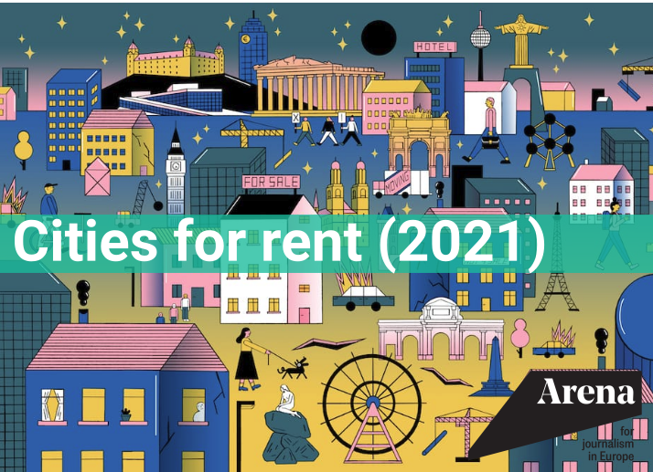
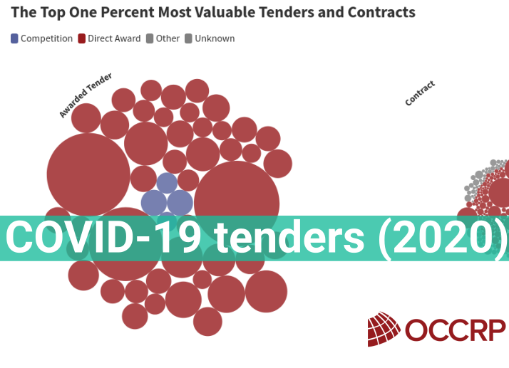
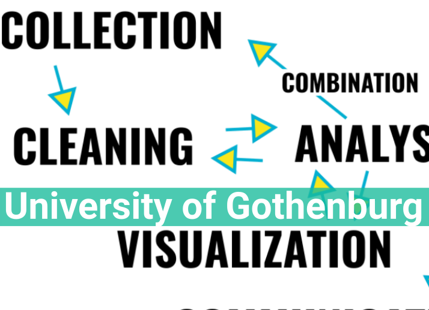
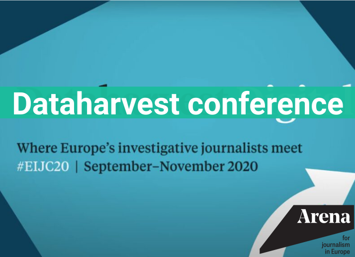
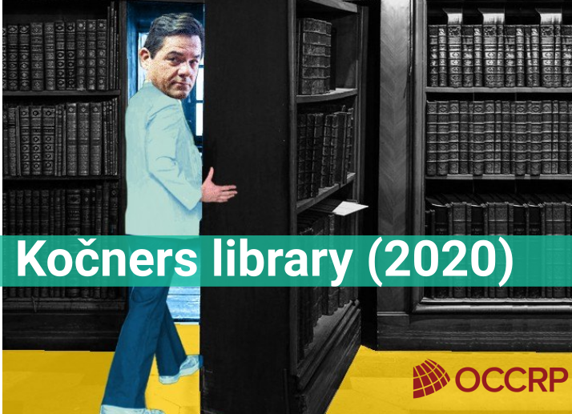
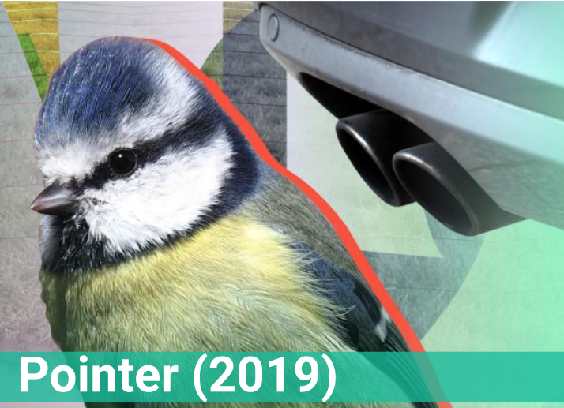
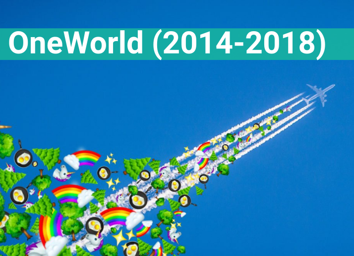
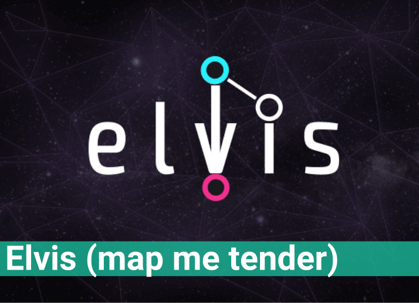

Freelance 👩💻 Data journalist & 💪👩💻 Data skills trainer
WORK








2021: Cities for rent
In this European reporting cooperation on corporate landlords I have worked as the data journalist, collection coordinator and analyst. See all the publications on the dedicated ARENA website
Lost in Europe
I work with Lost in Europe as a freelance data journalist. In 2021 we made European news with the story of 18.000 children in migration that disappeared from the radar of the authorities responsible for them. See the file on the lostineurope.eu website
The largest and coziest conference on investigative, cross-border and data journalism in Europe. Active not only as a participant, but also HackDay coordinator and data skills trainer. In 2020 I had the honors to coordinate and moderate all the data skills sessions on a 3 month long digital conference.
2020: Kočner's Library
The brutal assassination of Martina Kušnírová and Ján Kuciak in 2018 shook Slovak politics. Kuciak, a 27-year-old investigative reporter, had uncovered multiple cases of corruption and fraud. A Slovak court has since found two men guilty of committing the crime, even as businessman Marian Kočner, accused of masterminding the attack, was found not guilty (of the attack, but was found guilty of fraud).
In late 2019, reporters at the Ján Kuciak Investigative Center in Bratislava and the Czech investigative reporting platform Investigace.cz, were given access to the complete police case file on the two murders. Slovak police and Europol had collected a total of 53 TB of material. The full archive included digital copies of seized computers and phones, footage from security cameras and other evidence. I was a part of the OCCRP’s data team, helping to transfer and analyze the information. Our team's work has a won a journalistic prize in Slovakia.
A software development project I worked on as an initiator and team lead: data visualization tool for public spending networks. We set out to visualize all the public spending in Europe, however it proved to be difficult to build a robust and fast graph database. However, we have managed to make one well functioning version for the Government Transparency Institute containing only data on European defence contracts
ABOUT
Hi! I am Ada, a nerd in the newsroom, data journalist, trainer and public spending research enthusiast.
Do you need to do some scraping? Data creation, collection analysis or visualisation? Or do you want me to teach? Do get in touch!